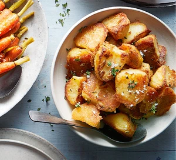

BBC Best Roasties Ever

Description
Crispiest ever roast potatoes
Ingredients
- 4 tablespoons oil
- 2 tablespoons lard or duck fat
- 3 pounds Maris Piper potatoes peeled and quartered
- 50 grams butter
- 1/2 bunch lemon thyme
- 6 garlic cloves, smashed
- 1 tablespoon kosher salt
Steps
- Preheat oven to 425F. Add the fats into a large flameproof baking tray (or ovensafe saute pan) and put in the oven to heat.
- Bring large pot of salted water to boil, add peelings and potatoes and boil for 8 minutes. Drain potatoes and discard peelings. Leave to steam dry 15 minutes then return potatoes to pan and shake with the lid on to roughen up edges.
- Remove the tray from the oven and place on stove over medium heat. Add butter to oil, then potatoes one at a time. Turn them over to coat entire surface. Reduce oven to 400F. Place thyme and garlic in the pan, in between potatoes. Sprinkle with salt. Return to oven for 1 hour, turning every 15 minutes until golden and crisp.